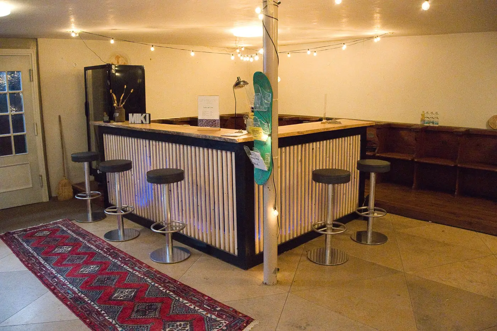
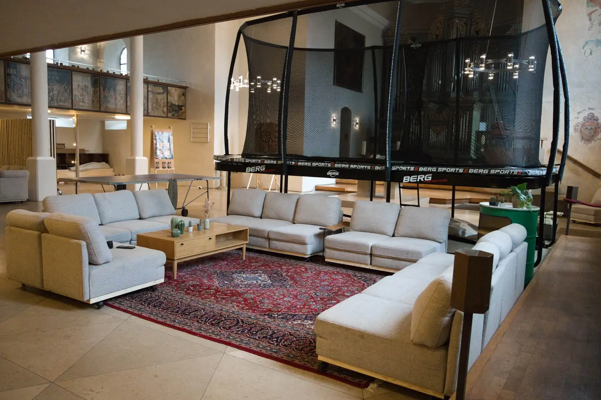
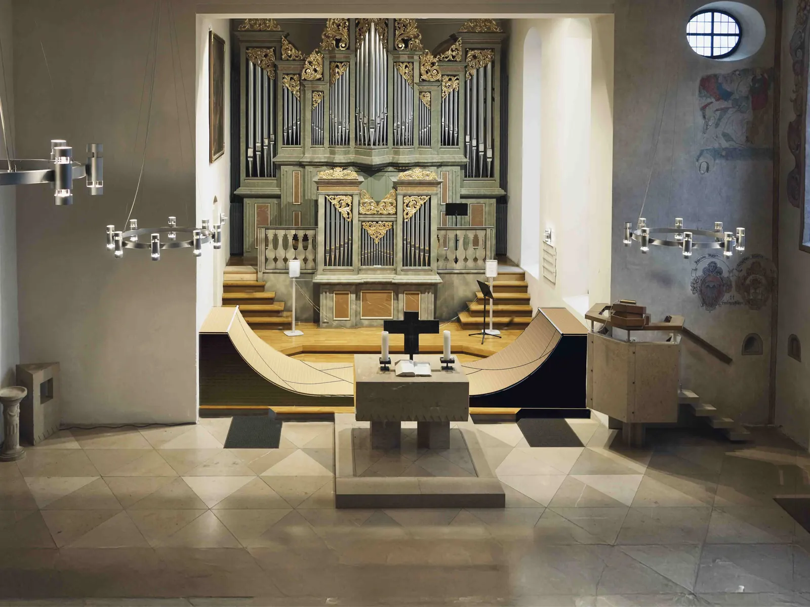
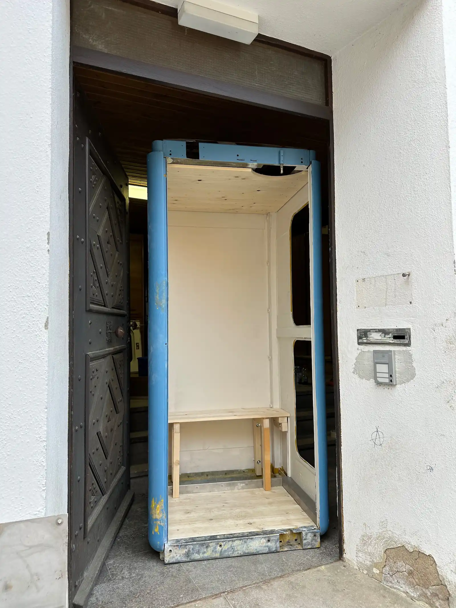

- um 1150–1220 An dieser Stelle steht eine kleine romanische Nikolauskapelle – die Vorgängerin der heutigen Kirche.
- um 1490–1492 Die heutige Saalkirche wird gebaut: mit Langhaus, Chor und einem Turm, der direkt in die Stadtmauer eingebaut ist.
- 1621 Der württembergische Baumeister Heinrich Schickhardt plant einen Anbau an der Nordseite – die Kirche wird größer.
- 1629 Gottfried Enßlin der Ältere, Maler und Bürgermeister von Heidenheim, malt 35 Holztafelbilder mit Szenen aus der Bibel. 27 davon schmücken bis heute die Emporen, acht weitere sind im Museum Schloss Hellenstein.
- 1668 Der Turm bekommt ein achteckiges Geschoss und seine Glockenhaube mit farbig glasierten Dachziegeln.
- 1767 / 1777 Langhaus und Chor werden erweitert, um Platz für Emporen und eine neue Orgel zu schaffen.
- 1898 Heidenheim ist stark gewachsen – deshalb übernimmt die Pauluskirche die Rolle der evangelischen Stadtpfarrkirche. Damit ist die Michaelskirche nicht mehr die wichtigste Kirche der Stadt.
- 1965–1967 Bei einer Renovierung tauchen die Holztafelbilder von 1629 wieder auf – sie waren lange Zeit übermalt.
- 1969 Die heutige Orgel wird gebaut, von der Giengener Orgelmanufaktur Gebr. Link nach Plänen von Helmut Bornefeld. Der denkmalgeschützte Mittelteil ihrer Front stammt von Georg Friedrich Schmahl aus dem Jahr 1726.
- zuletzt Die Michaelskirche steht überwiegend leer. Damit sie weiter genutzt und finanziert werden kann, braucht es neue Ideen.
- 2023 Im Beteiligungsprojekt „Auf geht’s Michael“ werden neue Nutzungen ausprobiert – auch ganz unterschiedliche, nicht-kirchliche Veranstaltungen. Diskutiert wird unter anderem ein Kulturzentrum. Am Ende steht die Entscheidung für eine Jugendkirche.
- seit Ende 2025 Die Kirche wird zur Jugendkirche MiKi: mit Sofas, Bar, Gaming-Bereich und Trampolin – vieles bauen Jugendliche selbst. Geplant sind eine Boulderwand auf der Empore und eine Halfpipe vor der Orgel.
Zur Startseite
Für Eltern, Gemeinde & Unterstützer
Über die MiKi
Wie aus der denkmalgeschützten Michaelskirche eine Jugendkirche wird – und wie du dabei helfen kannst.
Vision
Unsere Vision
Kirche mal anders. Hier ist jeder willkommen – ganz egal, ob du gläubig bist oder nicht. Mit der MiKi möchten wir einen Raum schaffen, in dem sich junge Menschen willkommen fühlen, Gemeinschaft erleben und den christlichen Glauben kennenlernen und vertiefen können. Das Besondere: Die jungen Menschen entscheiden, wie die Kirche aussehen wird, und setzen die Umgestaltung selbst um.
-
DIY: Du kannst selbst anpacken und mitgestalten.
-
Wie daheim: Couches statt Holzbänke. Action statt Stille.
-
Gemeinschaft: Ein lebendiger Spot für Glaube, Sport und Freunde.

Sehenswürdigkeit in Heidenheim
Die Michaelskirche Heidenheim
Über 500 Jahre alt und trotzdem alles andere als verstaubt: Die evangelische Michaelskirche in Heidenheim an der Brenz ist ein echtes Kulturdenkmal. Sie thront am Hang direkt an der alten Stadtmauer – ihr Turm ist sogar ein Teil davon.
Gebaut wurde sie um 1490 – also gut 500 Jahre vor dem ersten Smartphone. Drinnen gibt’s einiges zu entdecken: 27 Bilder mit Szenen aus der Bibel, gemalt 1629, eine Orgel mit einer rund 300 Jahre alten Front und draußen die bunte Turmhaube von 1668. Und seit Ende 2025 kommt etwas ganz Neues dazu: Sofas, Bar und Trampolin – die Kirche wird zur Jugendkirche MiKi.
Geschichte der MichaelskircheÜber 500 Jahre im Zeitraffer
Umbau
Das wird gerade gebaut
Die MiKi wird ständig weitergebaut und es ist noch einiges geplant. Hier siehst du live, wie weit wir sind.
Mach mit!
Wir suchen noch Leute, die Bock haben, anzupacken.
Hast du Ideen? Dann schick uns eine WhatsApp!
100% BarBauProjekt Fotos Die Bar ist fertig
Baufortschritt
BarBauProjekt

100% fertig
Die Bar ist fertig
Die Bar ist unser erstes abgeschlossenes Großprojekt – und wir sind so stolz darauf! In wochenlanger Eigenregie haben Jugendliche aus Holz und Beton eine vollständige Bar gezimmert. Hier können sich alle mit Getränken versorgen und in lockerer Atmosphäre zusammenkommen. Ein echtes Herzstück der MiKi – zu 100% von Jugendlichen für Jugendliche gebaut. Du willst auch mal anpacken? Komm dienstags ab 17 Uhr vorbei!
55% Chillout Area Fotos Couchtische und Deko steht noch an
Baufortschritt
Chillout Area

55% fertig
Couchtische und Deko steht noch an
Die Chillout Area nimmt Form an! Sofas und Sitzmöbel stehen bereits, aber Couchtische, Teppiche und Wanddekoration fehlen noch. Unser Ziel: Eine gemütliche Lounge-Atmosphäre, in der man einfach abhängen, quatschen oder auch mal die Bibel aufschlagen kann. Wer mitgestalten möchte oder kreative Ideen für die Deko hat – wir freuen uns über jeden, der mitmacht!
10% Skaterampe Fotos Noch in Planung.
Baufortschritt
Skaterampe

10% fertig
Noch in Planung.
Die Skaterampe ist unser nächstes großes Traumprojekt! Wir möchten einen echten Skatepark direkt in der Kirche bauen – ein Ort, an dem Jugendliche Tricks üben, Spaß haben und Gemeinschaft erleben. Aktuell sind wir in der Planungsphase: Wir sammeln Ideen, holen Angebote ein und suchen Sponsoren und freiwillige Helfer. Du hast Ahnung vom Rampenbau oder willst das Projekt unterstützen? Meld dich gerne bei uns!
50% Gebets-Box Fotos Der Innenaufbau fehlt noch
Baufortschritt
Gebets-Box

50% fertig
Der Innenaufbau fehlt noch
Die Gebets-Telefonzelle ist eine ganz besondere Ecke in der MiKi. Wir bauen eine alte Telefonzelle zu einem privaten Gebetsraum um – ein stiller Ort inmitten des Trubels, an dem man ungestört mit Gott sprechen kann. Die äußere Hülle steht bereits, aber der Innenausbau fehlt noch: Beleuchtung, Kissen und Gebetskarten warten auf ihre Umsetzung. Wenn du dieses Projekt unterstützen möchtest, freuen wir uns sehr über eine Spende!
Spenden
Unterstütze die MiKi
Damit die MiKi Realität bleibt, brauchen wir dich. Jeder Euro fließt direkt in Material, coole Events und Döner für unseren fleißigen ehrenamtlichen Mitarbeiter. Neben vielen privaten Spenden stärken uns diese Firmen, Organisationen und Stiftungen den Rücken. Danke, dass ihr an uns glaubt!
Per PayPal spenden
An PayPal arbeiten wir gerade noch. Bis dahin kannst du ganz einfach per Überweisung spenden – die Kontodaten findest du direkt hier drunter. Danke dir!
oder per Überweisung
Kontoinhaber
Ev. Kirchenbezirk Heidenheim
IBAN
DE51 6329 0110 0110 3650 03
Verwendungszweck
MiKi
Unsere Unterstützer


Gebet & Projekte
Gebets- und Spendenanliegen
Gebetsanliegen
Die MiKi ist ein Ort, an dem wir füreinander einstehen. Teile deine Gebetsanliegen mit uns – ob Sorgen, Freude oder wichtige Anliegen. Wir halten zusammen und tragen dich im Gebet.
Möchtest du für die MiKi beten?
Danke für dein Gebet! Gerade stehen Finanzierung, Umbau und Kontakte knüpfen auf der To-Do-Liste. Betest du mit?
Anliegen teilen
Dein Gebetsanliegen teilen
Dein Anliegen geht an unseren Jugendreferenten Stefan, der für dich und dein Anliegen betet. Auf Wunsch kann dein Anliegen auch anonym in einer Gebetsgemeinschaft geteilt werden.
Wähle deinen bevorzugten Kontaktweg:
Aktuelle Spendenprojekte
Boulderwand
Mit einer Boulderwand möchten wir ganz neue Menschen in die MiKi bringen. Gemeinsam mit dem DAV haben wir ein paar Konzepte entwickelt, die wir gerade denkmaltechnisch prüfen lassen
Ziel: €25.000
Gebets-Telefonzelle
Damit jeder ins Gespräch mit Gott kommt. Wir brauchen Budget für die Reparatur und Baumaterialien.
Ziel: €1.200

Fragen? Sprich mit Stefan
Stefan Hörz ist Jugendreferent beim Evangelischen Jugendwerk Bezirk Heidenheim und Ansprechpartner für die MiKi – für Eltern, Gemeinde, Presse, Stiftungen und alle, die mithelfen möchten.